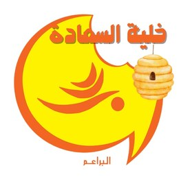
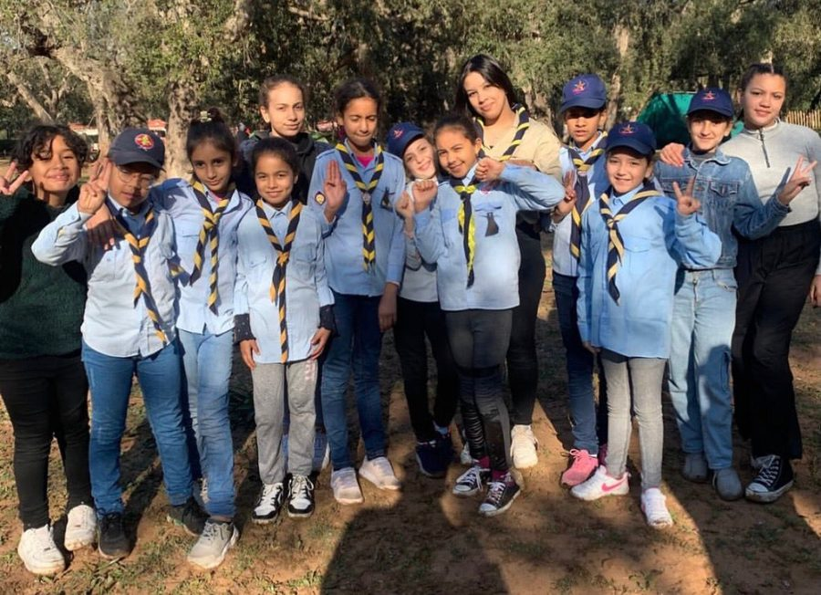
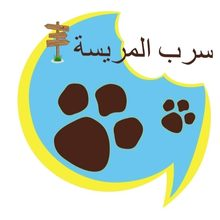
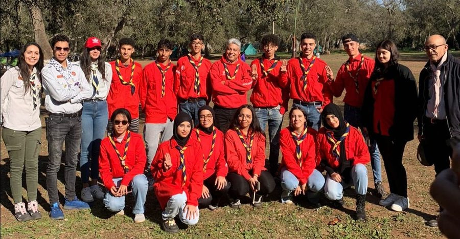
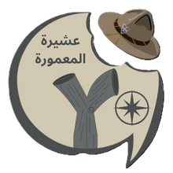
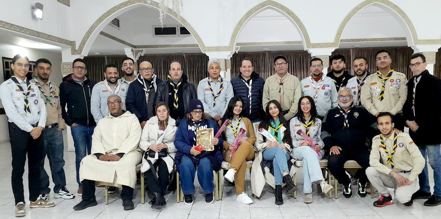
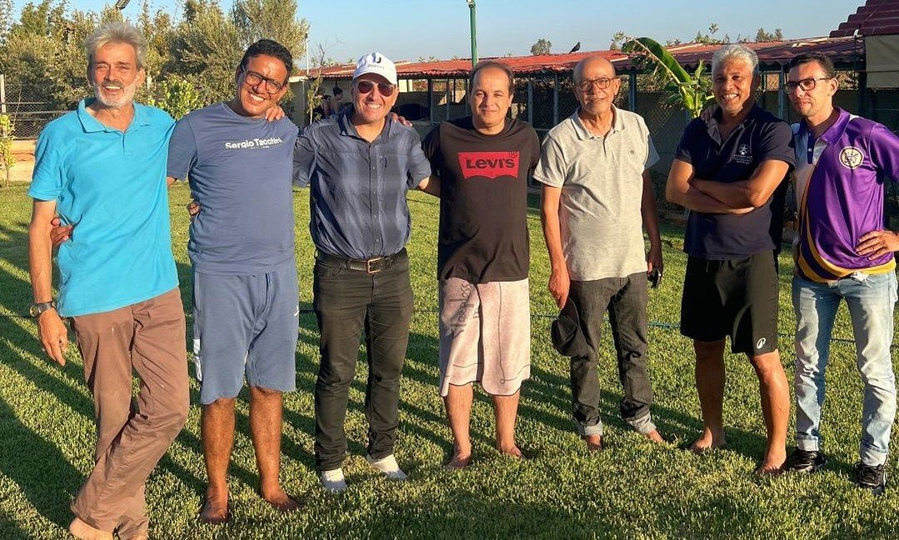

المراحل الكشفية
لكل مرحلة عمرية برنامجها التربوي ودليلها الخاص


البراعم
الفئة العمرية: 6 - 8 سنوات · الوحدة: «خلية السعادة»
هنا تبدأ المغامرة الكشفية! تجتمع البراعم في «خلية السعادة»، حيث يتعلم الطفل من خلال اللعب والحكاية والأنشودة والأنشطة اليدوية في الهواء الطلق.
تهدف المرحلة إلى تنمية الحواس والخيال والفضول لدى الطفل، وتعويده على الحياة الجماعية والنظافة والاعتماد على النفس في أبسط أمور حياته اليومية، في جو من المرح والأمان والرعاية.


الأشبال والزهرات
الفئة العمرية: 8 - 12 سنة · الوحدة: «السرب»
ينتظم الأشبال والزهرات في «السرب» الذي يتكوّن من سداسيات، لكل منها لونها أو رمزها وصيحتها. شعار المرحلة: «أقصى جهدنا».
يستكشفون الطبيعة ويتعلمون التقنيات الكشفية الأساسية عبر الألعاب والقصص الرمزية والشارات، فيكتسبون قيم التعاون والطاعة والصدق ويتدربون على تحمّل مسؤوليات صغيرة داخل السداسية. ويعتمد برنامج المرحلة على مقاربة الكفايات لتحديد ما يكتسبه الطفل من معارف ومهارات ومواقف عند تخرجه منها.

الكشافة والمرشدات
الفئة العمرية: 12 - 15 سنة · الوحدة: «الكتيبة»
المغامرة تأخذ بعداً جديداً! تتكوّن «الكتيبة» من طلائع تحمل أسماء حيوانات (الأسد، النسر، الصقر...) ولكل منها لواؤها وصيحتها وقائد طليعتها، وفق نظام الطلائع الكشفي.
في هذه المرحلة يتعلم الكشاف التخييم والريادة والتوجيه بالخريطة والبوصلة والإسعافات الأولية، ويخطط مع طليعته لمشاريعه الخاصة. إنها مرحلة الاستقلالية وروح الفريق والتحديات الجماعية الكبرى.

الكشاف المتقدم والرائدات
الفئة العمرية: 15 - 18 سنة · الوحدة: «الفوج»
مرحلة المشاريع الكبرى والخدمة العامة. ينتظم الكشاف المتقدم والرائدات في «الفوج»، وينجزون مشاريع طموحة نافعة للمجتمع يخططون لها وينفذونها ويقيّمونها بأنفسهم.
تركّز المرحلة على تنمية روح القيادة والمبادرة واتخاذ القرار، والانخراط الفعلي في قضايا المجتمع والبيئة، والإعداد لمشروع الحياة الشخصي والمهني. إنه وقت وضع المهارات في خدمة الآخرين.


الجوالة والدليلات
الفئة العمرية: 18 - 25 سنة · الوحدة: «العشيرة»
«الجَوَلان» مسار شخصي وجماعي في آن واحد. ينتظم الجوالة والدليلات في «العشيرة»، ويحملون رسالة «تنمية المجتمع».
يعمّقون التزامهم الكشفي عبر الرحلات والمخيمات الكبرى والأوراش التطوعية والخدمة الدائمة، ويتأهلون ليصبحوا راشدين مسؤولين وفاعلين في محيطهم، كما تُعدّ المرحلة خزّاناً لإعداد قادة المستقبل.

القادة والقائدات
الدور: التأطير والتكوين
متطوعون شغوفون، يشكل القادة والقائدات «هيئة القيادة»، وهم المحرك الحقيقي للفرع. يكرّسون وقتهم وطاقتهم لتربية الناشئة.
مهمتهم تنشيط الوحدات وتطبيق المناهج الكشفية، ومواكبة كل طفل وشاب في مساره، وضمان سلامة الأنشطة وجودتها. ويستفيدون باستمرار من دورات تكوينية في القيادة والتنشيط التربوي والتخييم.

الرواد
الفئة العمرية: 40 سنة فما فوق
المرحلة التي تضم الكشافين والقادة القدامى الذين تجاوزوا سن الشباب والقيادة الميدانية المباشرة (عادةً من سن 40 عاماً فما فوق).
تُعد هذه المرحلة إطاراً للتشريف وتبادل الخبرات ودعم الحركة الكشفية والمجتمع، دون الانخراط المباشر في تسيير الفرق الصغرى.